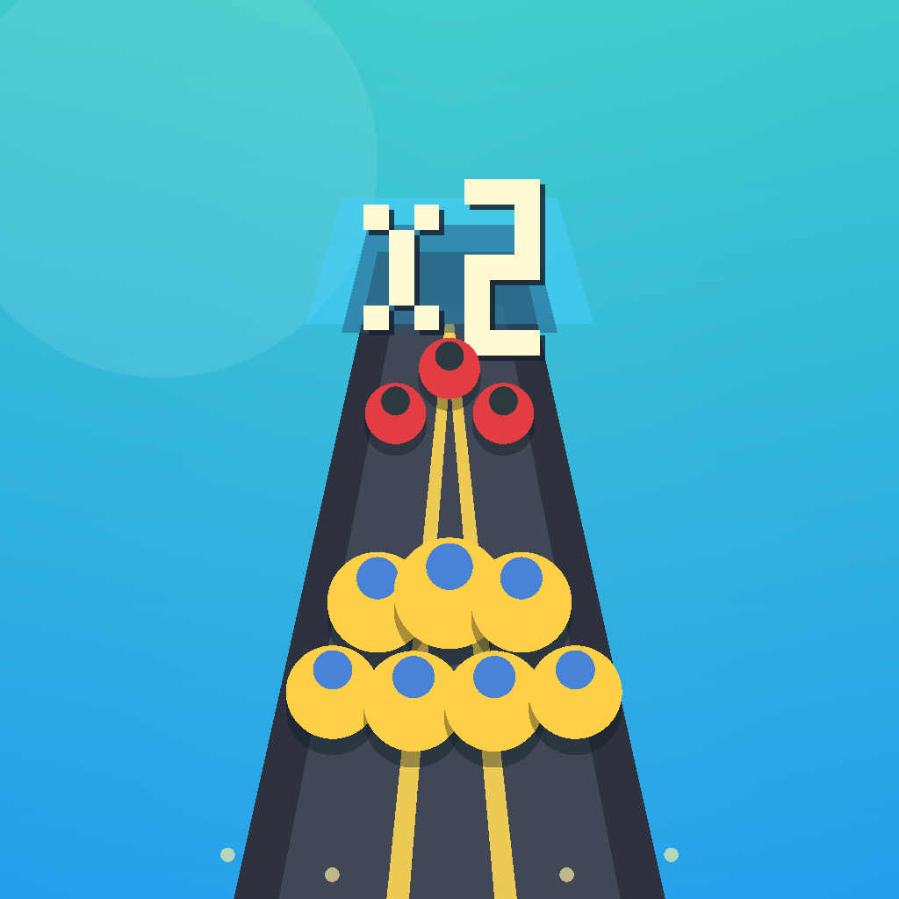
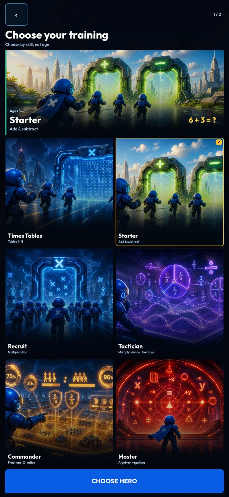
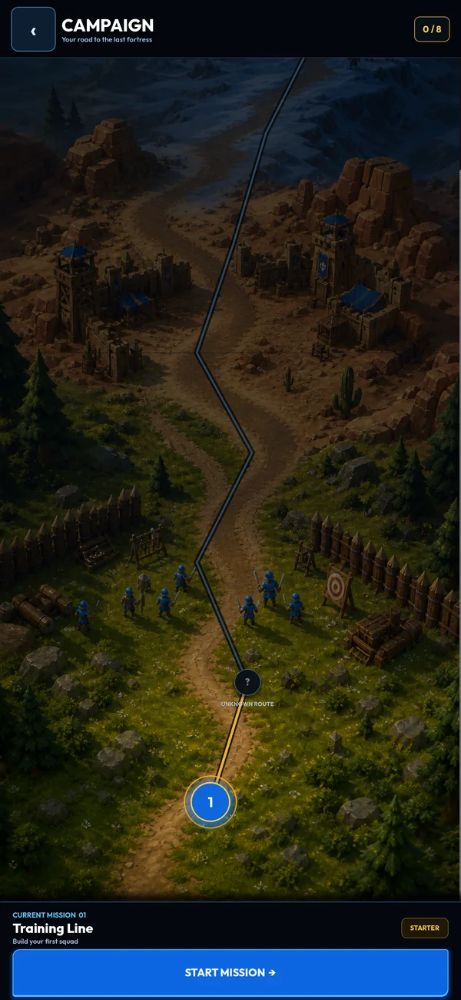
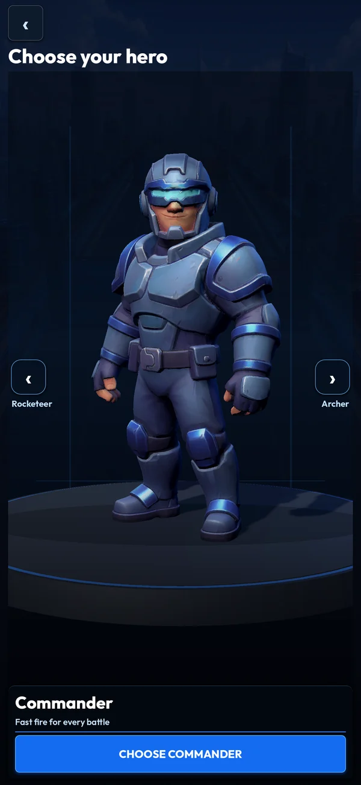
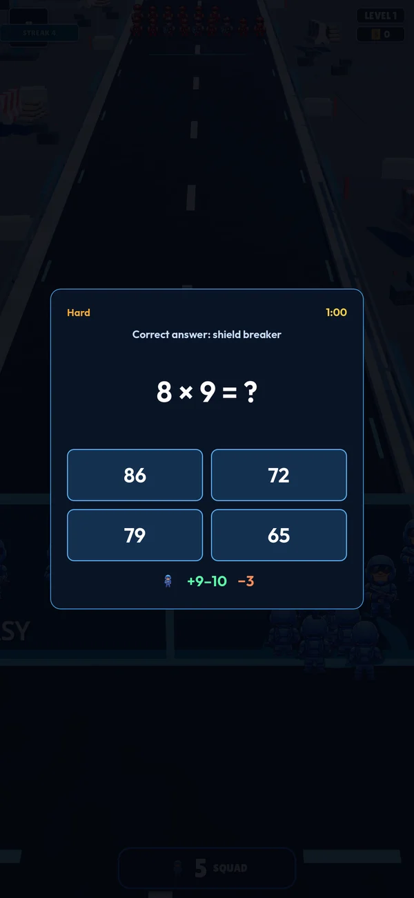
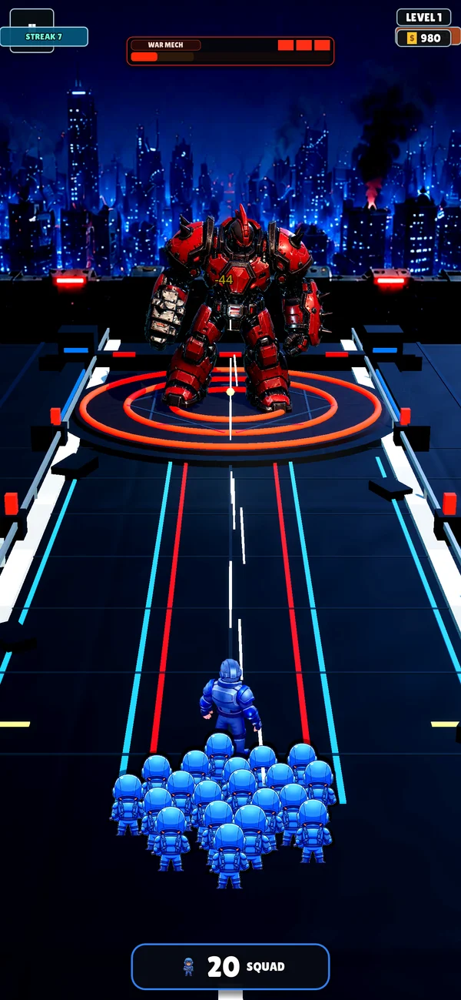
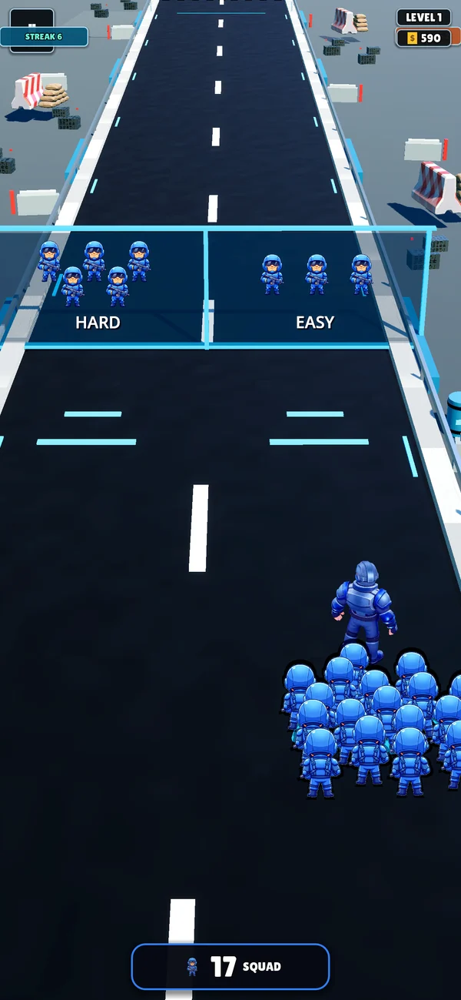

Hero-led runs
Pick Commander, Archer, or Rocketeer before the route. Each run starts with a clear role and a readable squad identity.

BrainMarshalBrainMarshal · In development for iPhone and iPad
BrainMarshal turns arithmetic into route decisions: choose gates, grow or lose soldiers, survive pressure waves, and see every answer change the run immediately.

Choose your training, explore the campaign and pick a hero. These are current game screens. Select any image to see it in full resolution.





A short-session arithmetic runner where the math is not hidden in a worksheet. It is the route, the risk, and the result.
Pick Commander, Archer, or Rocketeer before the route. Each run starts with a clear role and a readable squad identity.
Choose a training route, then answer clearly framed questions. Correct and incorrect answers change the squad before the next fight.
Routes get harder with more gates, waves, weapon choices, and final encounters while the good path stays winnable without becoming automatic.
BrainMarshal 1.0 is awaiting App Store review. A public download is not available yet.
A cleaner 3D character stage and matching loading previews keep the selected hero visually consistent.
Device testing is underway. There is no public download or TestFlight invitation yet.
In development. Support, privacy, and terms pages remain available while the playable loop continues to improve.
BrainMarshal is built around repetition, feedback, and visible cause-and-effect. The player should understand what happened, not just watch numbers fly away.
Fast addition, subtraction, multiplication, and division decisions give repeated practice without making the player stare at static drills.
Players learn that a bigger number is not always the smartest route when timing, enemy waves, and later choices matter.
No public chat, no account system, and no claim of curriculum replacement. It is focused arithmetic practice in game form.